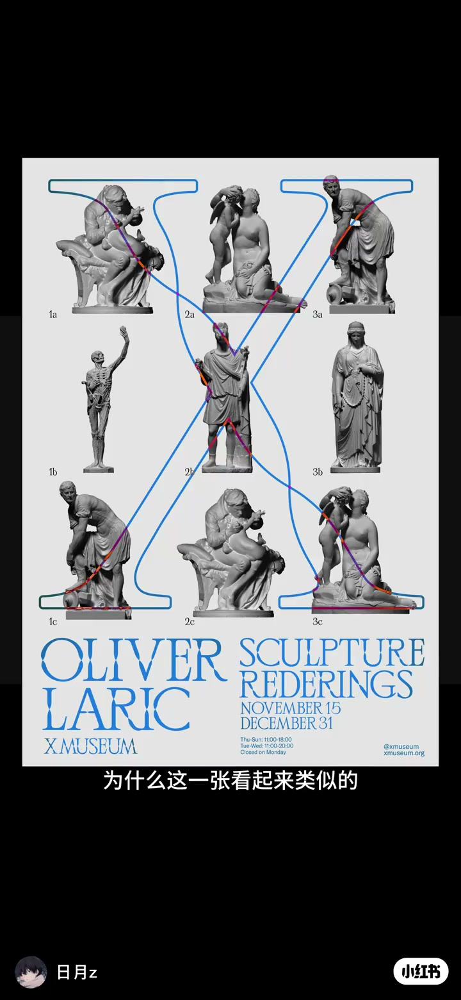
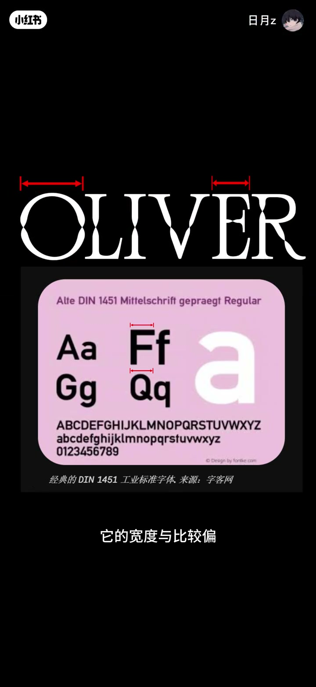
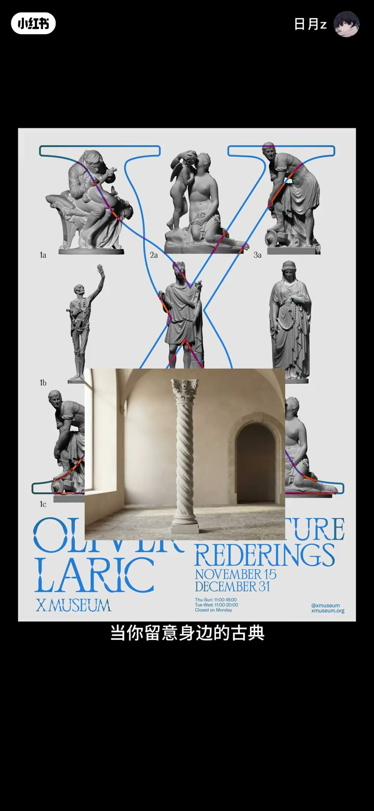
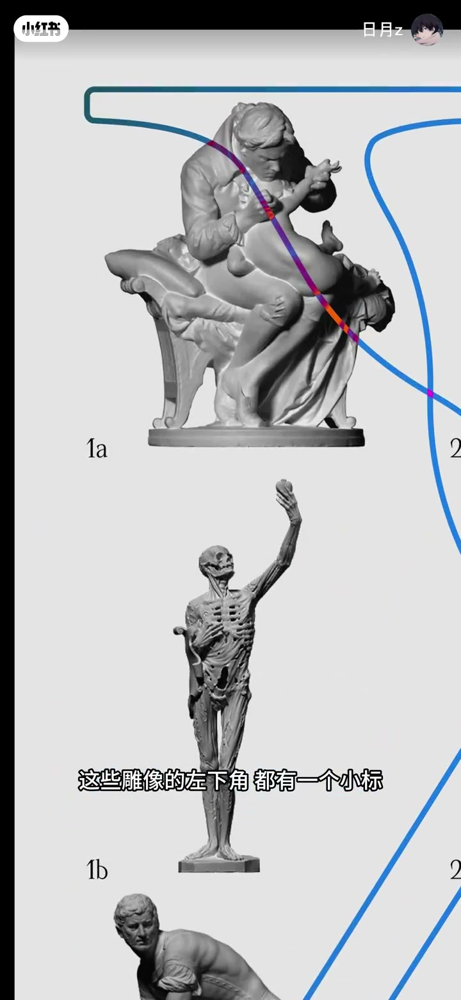
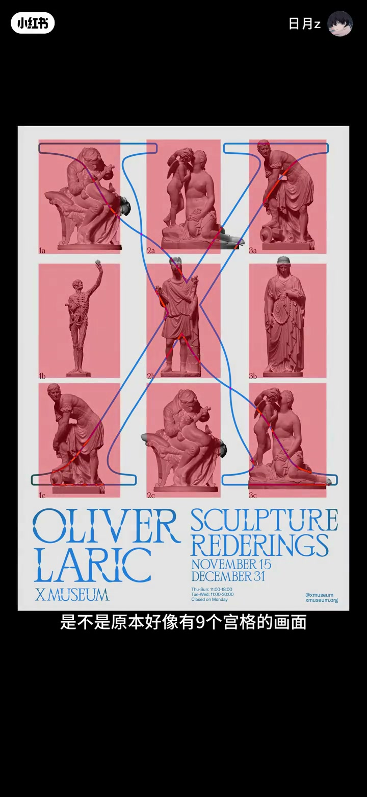

内容要点
「日月z」拆解 X Museum《Oliver Laric: Sculpture Renderings》展览海报：为何一张好看、一张类似却不舒服。从字体古典感、螺旋柱灵感、中心对称版式，到雕像角标如何把不规则图形「读整齐」。中前段对比画面依赖字幕，ASR 有缺口处已按画面重建。
知识结构
两张类似海报，一张舒服一张别扭。
O/M/S 等字形偏古典；横竖切割平整；扭形灵感来自螺旋柱。
中心对称传达古典；不对称对照立刻失稳。
雕像左下角小标兼编号与规则化；去掉后秩序感塌陷。
好看不是随便摆：字体切割、古典母题、对称骨架和角标编号，都在把「随意」收成可读的秩序。
00:00-00:46字体高贵感与螺旋柱母题
开场对比：为什么这张海报这么好看，另一张看起来类似却不舒服。进入字体层：字幕提到它「古典」在 O、M、S 等字形上；又与手写体不同——横竖切割比较平整且光滑，整字显得高贵（画面一度对照 DIN 类字体与「高挑」变形）。
扭在一起的造型常被问「什么意思」：留意古典椅子或螺旋柱（口播「黏蓝丹」宜作螺旋柱/Solomonic column 理解），会发现异常相像——设计灵感来源于此。


00:46-01:31对称版式与角标规则化
版式上也偏中心对称或比较对称，对称会传达古典感受；看一张不对称对照就明白。最细节的是：九宫格雕像左下角都有小标——不仅是编号，也能让不够规则的图形变得规则。
作者演示去掉小标后，原本像有秩序的画面瞬间减失去规则感；原理与其此前海报视频一致。收束：一切看着随意选择，实际有大量隐藏考量。



完整转录（23段）
以下文本由 Whisper medium 模型自动转录，可能存在少量识别误差，已尽可能修正。
你看啊,为什么这张海报就这么好看呢
为什么这一张看起来类似的但是就是不舒服呢
这也让整个字体高贵了起来
但它又与手写字体不同
它的横竖切割都是比较平整且光滑的
这本就有同学会问了,这个扭在一起是什么意思啊
当你留意身边的古典椅子或一些黏蓝丹的时候
你就发现它们异常的像
而这个设计灵感也是来源于此
除此之外 vegetation也是中心对称或比较对称的
这种对称的板式也会传达古典的感受
看一张不对称的你就知道了
并且最细节的是
这些雕像的左下角标都有一个小标
这不仅是一种编号
同样它也可以让不够规则的图形变得规则
你看,我把这些小标去掉以后
是不是原本好像有九个功德的画面
瞬间就减入了一些规则的感受
这个原理和我之前的视频中的海报是一样的
所以啊,一切看著都随意选择
实际上里面有著非常多隐藏的考量
是